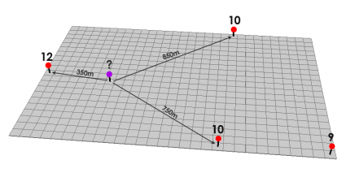
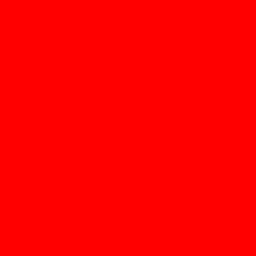
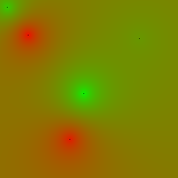

Генерация тепловой карты
Пространственная интерполяция методом Inverse Distance Weighting (IDW)
Метод обратно взвешенных расстояний (Inverse Distance Weighted — IDW) — это детерминированный алгоритм интерполяции, используемый в ГИС для оценки значений в точках с неизвестными данными на основе взвешенного среднего значений известных точек.
В приведенном ниже примере красные точки имеют известные значения (экспериментальные в нашем случае). Остальные точки необходимо вычислить для плавного отображения тепловой карты (например для фиолетовой точке).

Как найти значение в точках, где нет экспериментальных данных?
Можно также указать “радиус поиска” и интерполяция будет работать (использовать для расчета) только нужные нам известные точки.

Пример с ограничением радиуса. Источник: https://gisgeography.com/inverse-distance-weighting-idw-interpolation/
Ниже представлена формула расчета IDW:
, где:

Результат интерполяции. Источник: https://gisgeography.com/inverse-distance-weighting-idw-interpolation/
Реализация в коде
Pixmap (PNG)
Для примера возьмем 5 точек на пиксельной карте размером 256x256 пикселей (должно быть нам знакомо).
#include <stb_image.h>
#include "stb_image_write.h"
...
...
float x_pixels[5] = { 10, 40, 100, 120, 200 };
float y_pixels[5] = {10, 50, 200, 134, 55};
float value[5] = { 80, 5, 10, 95, 59 };
int channels = 4; // RGBA
int h = 256;
int w = 256;
std::vector<unsigned char> image(w * h * channels);
for (int y = 0; y < h; ++y) {
for (int x = 0; x < w; ++x) {
int index = (y * w + x) * channels;
image[index + 0] = 255; // Red
image[index + 1] = 0; // Green
image[index + 2] = 0; // Blue
image[index + 3] = 255; // Alfa
}
}
// Сохраняем пиксельную карту в формате .png
stbi_write_png("gradient.png", w, h, channels, image.data(), w * channels);
Результатом будет след. изображение, которое сохранится в директории /build вашего проекта.

Первая пиксельная карта в формате .png.
Градиент
Для примера объявим структуру Color, которая состоит из 3 цветов. Также определим функцию градиентного перехода, которая будет возвращать текущий цвет в зависимости от его интенсивности.
Интенсивность будем определять весовым коэфициентом, который вычисляется по формуле (1).
struct Color {
int r, g, b;
};
// Calculates the color at a specific 'ratio' (0.0 to 1.0)
Color gradientColor(Color c1, Color c2, double ratio) {
return {
static_cast<int>(c1.r + (c2.r - c1.r) * ratio),
static_cast<int>(c1.g + (c2.g - c1.g) * ratio),
static_cast<int>(c1.b + (c2.b - c1.b) * ratio)
};
}
Снова пересчитываем пиксельную карту и преобразуем в .png-формат.
#include <stb_image.h>
#include "stb_image_write.h"
...
...
float x_pixels[5] = { 10, 40, 100, 120, 200 };
float y_pixels[5] = {10, 50, 200, 134, 55};
float value[5] = { 80, 5, 10, 95, 59 };
int channels = 4; // RGBA
int h = 256;
int w = 256;
std::vector<unsigned char> image(w * h * channels);
for (int y = 0; y < h; ++y) {
for (int x = 0; x < w; ++x) {
float weight = XXX; // вес считаем по формуле IDW
double ratio = (double)weight / (steps - 1);
Color current = gradientColor(start, end, ratio);
int index = (y * w + x) * channels;
image[index + 0] = current.r; // Red gradient
image[index + 1] = current.g; // Green gradient
image[index + 2] = current.b; // Blue constant
image[index + 3] = 255; // Alfa constant
}
}
// Сохраняем пиксельную карту в формате .png
stbi_write_png("gradient.png", w, h, channels, image.data(), w * channels);

Реализация градиента.
Примечания к практической работе
В рамках реализации данного вида интерполяции нам потребуются формулы:
формула вычисления дистанции между двумя точками на карте Земли
Обратите внимание на нахождение суммы весовых коэфициентов в формуле
(1)и теми параметрами, по которым вы будете строить тепловую карту (могут быть децибелы).